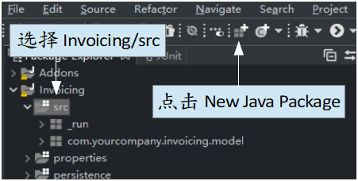
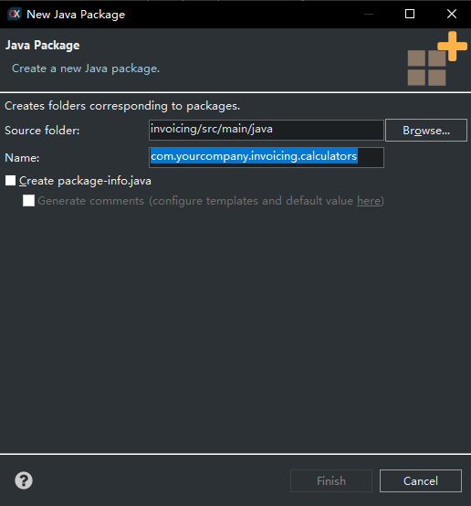
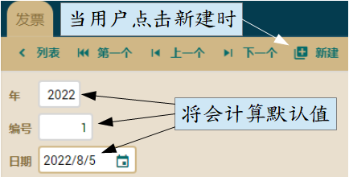
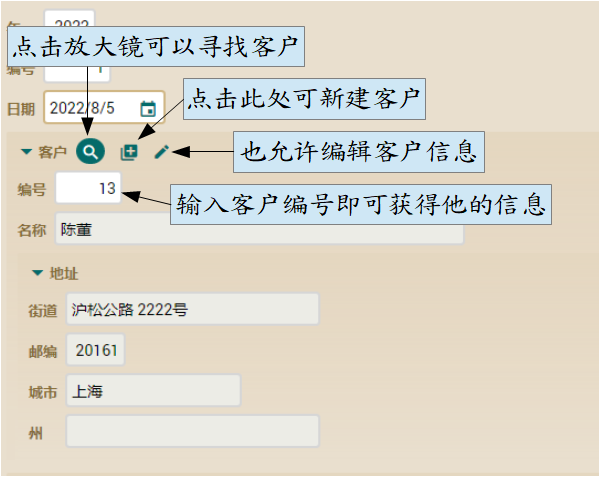
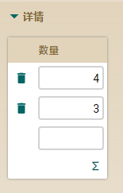
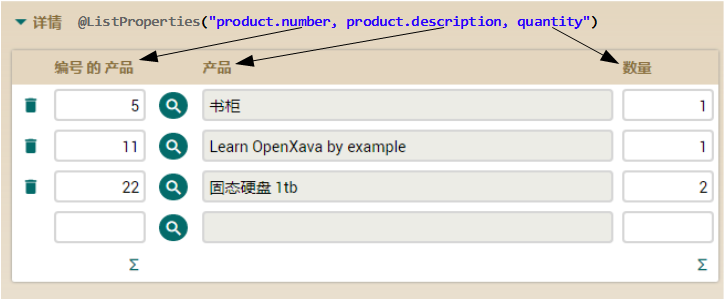
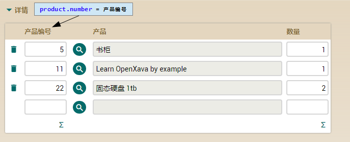

我们将在 Invoice 实体中编写年、日期、编号（year、date、number）。要是这些属性有默认值的话最好，这样用户就不必每次都得输入。编写这个功能非常简单，只需使用 @DefaultValueCalculator 注解。在 Invoice 的第一版，您将看到我们如何定义年、日期、编号的默认值：
package com.yourcompany.invoicing.model;
import java.time.*;
import javax.persistence.*;
import javax.persistence.Entity;
import org.hibernate.annotations.*;
import org.openxava.annotations.*;
import org.openxava.calculators.*;
import lombok.*;
@Entity
@Getter
@Setter
public class Invoice {
@Id
@GeneratedValue(generator = "system-uuid")
@Hidden
@GenericGenerator(name = "system-uuid", strategy = "uuid")
@Column(length = 32)
String oid;
@Column(length = 4)
@DefaultValueCalculator(CurrentYearCalculator.class) // 今年
int year;
@Column(length = 6)
int number;
@Required
@DefaultValueCalculator(CurrentLocalDateCalculator.class) // 当前的日期
LocalDate date;
@TextArea
String remarks;
}
当用户点击“新建”时，将会自动输入当前的年份跟日期。这两个计算器（CurrentYearCalculator 和 CurrentLocalDateCalculator）都包含在 OpenXava 中。您可以在 org.openxava.calculators 包中看到其它内置的计算器。
要注意的是，在日期方面，我们使用 LocalDate（来自 java.time 包）他只有年、月、日，而 Java 还有一个 Date 类型是在 java.util 包中，该 Date 不止包括日期，还有时间（小时、秒、毫秒）。但在这项目和大多业务应用程序中，通常都使用 LocalDate。
有时您需要创建自已的默认值。例如：我们希望新的发票编号是在同一年的最后一个发票编号上加一号。要使用自已的默认计算器很容易。首先，为计算器创建一个包并命名为 com.yourcompany.invoicing.calculators。
要创建一个新包，请选择 invoicing/src/main/java 文件夹并点击 New Java Package，输入包名 com.yourcompany.invoicing.calculators 后再点击 Finish。


包是为了方便管理组织 Java 文件的方式。您需在 yourcompany 上改成您的公司，例如您为电信公司（telecom）工作，就得用 com.telecom.invoicing.calculators
现在在此包中创建叫 NextNumberForYearCalculator 的类：
package com.yourcompany.invoicing.calculators;
import javax.persistence.*;
import org.openxava.calculators.*;
import org.openxava.jpa.*;
import lombok.*;
public class NextNumberForYearCalculator implements ICalculator { // 计算器必须实现 ICalculator
@Getter // 可公开访问
@Setter // 可公开访问
int year; // 这个值会在计算之前被注入
public Object calculate() throws Exception { // 它进行计算
Query query = XPersistence.getManager() // 一个 JPA 查询
.createQuery("select max(i.number) from Invoice i where i.year = :year"); // 查询的返回
// 指定年份的最大发票编号
query.setParameter("year", year); // 我们使用注入的年份作为查询的参数
Integer lastNumber = (Integer) query.getSingleResult();
return lastNumber == null ? 1 : lastNumber + 1; // 返回最后一个发票号码
// 並+1或是1（如果今年还没有号码的话）
}
}
您的计算器必须实现 ICalculator 接口（因此须有一个 calculate() 方法）。我们先声明一个年的属性（year）好使用它计算。为了实现逻辑，我们使用 JPA 查询（您可以在
附录 B 中了解如何使用 JPA）。现在我们只需要在 Invoice 实体中编写 number 属性：
public class Invoice {
...
@Column(length=6)
@DefaultValueCalculator(value=NextNumberForYearCalculator.class,
properties=@PropertyValue(name="year") // 调用calculate()之前将 Invoice 中的年份值注入到计算器
)
int number;
...
}
现在您正面临新的东西，@PropertyValue 注解。当您使用它时，Invoice 中的 year 属性会先到计算器中计算。所以当用户点击“新建”时，发票编号就会以下一个号码出现。该计算方法并不是最好的，尤其在很多用户同时使用时，不过请放心，我们会在之后改进这个问题。
这是默认计算器的视觉效果：

这些默认值是初始值，用户可以依需求更改他它们。
请注意，year 跟 number 并不是键，我们正使用 oid 作为键（有用 @id 注解），通常使用单键就好，不过也是可以使用
复合键。
常规注解 - 多对一
在在准备好所有属性后，是时后添加与其它实体的关联了。我们将添加从发票（Invoice）到客户（Customer）的引用，因为一张发票总得要有客户，
不过在添加客户之前，须删除发票模块中所有当前的发票，因为客户将会是必须的所以可能会跟现在的数据产生故障。
在 Invoice 实体添加以下代码：
@ManyToOne(fetch=FetchType.LAZY, optional=false) // Customer 为必须的
Customer customer;
现在 Invoice 模块应该长这样：

目前这里不需要再编写什么了，现在我们在 Invoice 中添加详细信息的集合。
依赖对象的集合
通常一张发票需要包含产品、数量等信息。这些信息是发票的一部份，不与其它发票共享，而当发票被删除时，它们也一并被删除。所以对发票添加详细信息最自然的方法是用可嵌入对象。要使用 JPA 执行需声明一个常规的集合，在 Invoice 里声明并注释 @ElementCollection：
@ElementCollection
Collection<Detail> details;
使用 @ElementCollention 时，当发票被删除，那几行详细信息也会被删除。而在保存时，详细信息不会在保存发票前先保存，而是跟发票一起保存。
要使用这集合您必须编写 Detail 类：
package com.yourcompany.invoicing.model;
import javax.persistence.*;
import lombok.*;
@Embeddable @Getter @Setter
public class Detail {
int quantity;
@ManyToOne(fetch = FetchType.LAZY, optional = true)
Product product;
}
要注意的是 Detail 使用 @Embeddable 注解而不是 @Entity，所以您不能定义实体的 @ElementCollection，可嵌入类可以有属性和引用但不能有集合。
目前我们只有产品跟数量，但已足够来运行 Invoice 和 Detail 了。用户可添加、编辑和删除集合中的元素。

这截图代表默认下显示的属性是普通属性，默认下不会包括引用的属性。这会让我们的用户界面不太美观，因为现在只看的到数量。不过可以用 @ListProperties 解决：
@ElementCollection
@ListProperties("product.number, product.description, quantity")
Collection<Detail> details;
如您所见，只需要将您想要的属性填在 @ListProperties 的值中，以逗号分隔。您可以使用限定属性，使用点符莱访问属性，像 product.number 和 product.description 。

我们发觉 product.number 属性的标签怪怪的，所以想将其更改为：产品编号。为此，我们必须将位于 invoicing/src/main/resources/i18n 文件夹中的 invoicing-labels_en.properties 文件名更改为 invoicing-labels_zh.properties 并添加以下的标签来覆盖 OpenXava 所带的默认标签：
product.number = 产品编号

这新的标签 product.number 会在所有使用它的模块中更改，如果我们只想在 Invoice 实体中的详情集合裡更改，应该使用以下标签：
// 在本应用程序我们将使用上一个标签，而不是以下这个
Invoice.details.product.number= 产品编号
这样，我们就可以自定义OpenXava 给我们的默认标签或是创建自己的标签。
总结
恭喜！您已完成域模型的类并有一个可运行的应用程序。现在您的用户可以使用产品、类别、客戶甚至创建发票。产品和类别的界面都不错，雖然发票界面還可以改善。顺便说一句，您已经使用了一些 OpenXava 注解来优化視圖，例如 @DescriptionsList、@NoFrame 和 @ListProperties，另外我们也看到如何更改 OpenXava 自带的默认标签
。再下一章我们将使用更多这类注解来轻松的优化 Invoice 用户界面。